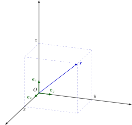

数学符号表
本文规定了 Physics Learning Wiki 中数学符号的推荐写法，并给出了一些应用范例。
本文参考了 GB/T 3102.11-1993、ISO 80000-2:2019 和《具体数学》的符号表修订，故基本与国内通行教材的符号体系和物理学场景的惯用符号体系兼容。
符号的 LaTeX 写法请参考 本文章的源代码
数理逻辑
| 编号 | 符号，表达式 | 意义，等同表述 | 备注与示例 |
|---|---|---|---|
| n1.1 |  |
|
|
| n1.2 | |
|
此处的 "或" 是包含的，即若 |
| n1.3 | |
|
非 |
| n1.4 | |
若 |
|
| n1.5 | |
|
|
| n1.6 | |
对 |
如果从上下文中可以得知考虑的是哪个集合 |
| n1.7 | |
存在一个属于 |
如果从上下文中可以得知考虑的是哪个集合 |
集合论
| 编号 | 符号，表达式 | 意义，等同表述 | 备注与示例 |
|---|---|---|---|
| n2.1 | |
|
|
| n2.2 | |
|
|
| n2.3 | |
含元素 |
也可写作 |
| n2.4 | |
|
例如 如果从上下文中可以得知考虑的是哪个集合 |
| n2.5 | |
|
|
| n2.6 | |
空集 | 不应使用 |
| n2.7 | |
|
|
| n2.8 | |
|
若 |
| n2.9 | |
|
|
| n2.10 | |
|
|
| n2.11 | |
集合 |
也可使用 进一步，令 |
| n2.12 | |
集合 |
也可使用 进一步，令 |
| n2.13 | |
|
不应使用 当 不引起歧义的情况下也可使用 |
| n2.14 | |
有序数对 有序偶 |
|
| n2.15 | |
有序 |
参见 n2.14. |
| n2.16 | |
集合 |
|
| n2.17 | |
集合 |
该符号的另一种用法参见 n6.8 |
| n2.18 | |
|
如果从上下文中可以得知考虑的是哪个集合 |
| n2.19 | |
指示函数 | |
| n2.20 | |
幂集 | |
标准数集和区间
关系
| 编号 | 符号，表达式 | 意义，等同表述 | 备注与示例 |
|---|---|---|---|
| n4.1 | |
|
该符号的另一个含义参见 n4.18. |
| n4.2 | |
|
|
| n4.3 | |
|
参见 n2.9,n2.10 |
| n4.4 | |
|
不排除相等。 |
| n4.5 | |
|
例如： 当 |
| n4.6 | |
|
也可使用 |
| n4.7 | |
|
当 该符号也用于表示代数结构的同构。 |
| n4.8 | |
|
|
| n4.9 | |
|
|
| n4.10 | |
|
|
| n4.11 | |
|
|
| n4.12 | |
|
|
| n4.13 | |
|
|
| n4.14 | |
无穷大 | 该符号 不 是数字。 也可以使用 |
| n4.15 | |
|
一般出现在极限表达式中。 |
| n4.16 | |
|
对整数 |
| n4.17 | |
|
对整数 该符号的另一种用法参见 n5.2 |
| n4.18 | |
|
对整数 不要与 n4.1 中提到的相混淆。 |
初等几何学
| 编号 | 符号，表达式 | 意义，等同表述 | 备注与示例 |
|---|---|---|---|
| n5.1 | |
平行 | |
| n5.2 | |
垂直 | 该符号的另一种用法参见 n4.17 |
| n5.3 | |
（平面）角 | |
| n5.4 | |
线段 |
|
| n5.5 | |
有向线段 |
|
| n5.6 | |
点 |
即 |
运算符
| 编号 | 符号，表达式 | 意义，等同表述 | 备注与示例 |
|---|---|---|---|
| n6.1 | |
|
|
| n6.2 | |
|
|
| n6.3 | |
|
|
| n6.4 | |
|
|
| n6.5 | |
|
若出现小数点，则应只使用 部分用例参见 n2.16,n2.17,n14.11,n14.12 |
| n6.6 | |
|
可用 不应使用 |
| n6.7 | |
|
也可使用 令 |
| n6.8 | |
|
也可使用 令 该符号的另一种用法参见 n2.17 |
| n6.9 | |
|
|
| n6.10 | |
|
应避免使用 |
| n6.11 | |
|
应避免使用 |
| n6.12 | |
|
其他均值有： 调和均值 几何均值 二次均值/均方根 |
| n6.13 | |
|
对实数 参见 n11.7. |
| n6.14 | |
|
小于等于非空集合 |
| n6.15 | |
|
大于等于非空集合 |
| n6.16 | |
|
也可使用 |
| n6.17 | |
向下取整 小于等于实数 |
例如： |
| n6.18 | |
向上取整 大于等于实数 |
例如： |
| n6.19 | |
|
可推广到有限集中。 要表示无限集中的最小值建议使用 |
| n6.20 | |
|
可推广到有限集中。 要表示无限集中的最大值建议使用 |
| n6.21 | |
|
对正整数 其中 |
| n6.22 | |
整数 |
可推广到有限集中。不引起歧义的情况下可写为 |
| n6.23 | |
整数 |
可推广到有限集中。不引起歧义的情况下可写为 |
| n6.24 | |
Iverson 括号 | 若命题 |
| n6.25 | |
Knuth 箭头 | 对非负整数 |
| n6.26 | |
多项式/形式幂级数/形式 Laurent 级数 |
若 可推广到多元情况，如若 |
组合数学
本节中的
| 编号 | 符号，表达式 | 意义，等同表述 | 备注与示例 |
|---|---|---|---|
| n7.1 | |
阶乘 | |
| n7.2 | |
下降阶乘幂 | |
| n7.3 | |
上升阶乘幂 | |
| n7.4 | |
组合数 | |
| n7.5 | |
第一类 Stirling 数 | |
| n7.6 | |
第二类 Stirling 数 | |
函数
| 编号 | 符号，表达式 | 意义，等同表述 | 备注与示例 |
|---|---|---|---|
| n8.1 | |
函数 | |
| n8.2 | |
函数 函数 |
|
| n8.3 | |
|
也可使用 |
| n8.4 | |
|
也可使用 |
| n8.5 | |
|
|
| n8.6 | |
将所有 |
例如： 这是由 |
| n8.7 | |
|
函数 若 不要与函数的倒数 |
| n8.8 | |
|
|
| n8.9 | |
|
|
| n8.10 | |
|
主要用于定积分的计算中。 |
| n8.11 | |
当 |
右极限和左极限的符号分别为 |
| n8.12 | |
|
当 使用符号 " 例如： |
| n8.13 | |
在上下文隐含的限制中有 |
使用符号 " 例如： |
| n8.14 | |
|
上下文隐含的两函数值的差分。例如： |
| n8.15 | |
|
仅用于一元函数。 可以显式指明自变量，如 |
| n8.16 | |
|
参见 n8.15 |
| n8.17 | |
|
仅用于一元函数。 可以显式指明自变量，如 可用 |
| n8.18 | |
|
仅用于多元函数。 可以显式指明自变量，如 可以扩展到高阶，如 |
| n8.19 | |
Jacobi 矩阵 | 参见1 |
| n8.20 | |
|
|
| n8.21 | |
|
|
| n8.22 | |
|
|
| n8.23 | |
|
也可使用 定积分还可以定义在更一般的域上。如 多重积分可写成 |
| n8.24 | |
函数 |
|
指数和对数函数
| 编号 | 符号，表达式 | 意义，等同表述 | 备注与示例 |
|---|---|---|---|
| n9.1 | |
自然对数的底 | 不要写成 |
| n9.2 | |
|
参见 n6.9. |
| n9.3 | |
|
|
| n9.4 | |
|
当底数不需要指定的时候可以使用 不应用 |
| n9.5 | |
|
参见 n9.4. |
| n9.6 | |
|
参见 n9.4. |
| n9.7 | |
|
参见 n9.4. |
三角函数和双曲函数
复数
| 编号 | 符号，表达式 | 意义，等同表述 | 备注与示例 |
|---|---|---|---|
| n11.1 | |
虚数单位 | 不可使用 i |
| n11.2 | |
|
参见 n11.3. |
| n11.3 | |
|
若 |
| n11.4 | |
|
|
| n11.5 | |
|
若 |
| n11.6 | |
|
|
| n11.7 | |
|
参见 n6.13. |
矩阵
| 编号 | 符号，表达式 | 意义，等同表述 | 备注与示例 |
|---|---|---|---|
| n12.1 | 参见2 |
|
也可使用 可用方括号替代圆括号。 |
| n12.2 | |
矩阵 |
矩阵 |
| n12.3 | |
标量 |
|
| n12.4 | |
矩阵 |
矩阵 |
| n12.5 | |
单位矩阵 | |
| n12.6 | |
方阵 |
|
| n12.7 | |
|
|
| n12.8 | |
|
|
| n12.9 | |
|
|
| n12.10 | 参见3 |
方阵 |
也可使用 |
| n12.11 | |
矩阵 |
|
| n12.12 | |
方阵 |
|
| n12.13 | |
矩阵 |
满足三角不等式：若 |
坐标系
本节考虑三维空间中的一些坐标系。点
| 编号 | 坐标 | 位置向量和微分 | 坐标名 | 备注 |
|---|---|---|---|---|
| n13.1 | |
|
笛卡尔坐标 | 基向量 基向量也可用 |
| n13.2 | |
|
柱坐标 | 若 |
| n13.3 | |
|
球坐标 | |
如果不使用 右手坐标系，而使用 左手坐标系，则应在之前明确强调，以免符号误用。



标量和向量
本节中，基向量用
标量和向量本身与坐标系的选择无关，而向量的每个标量分量与坐标系的选择有关。
对于基向量
在本节中，只考虑普通空间的笛卡尔（正交）坐标。笛卡尔坐标用
本节所有下标
| 编号 | 符号，表达式 | 意义，等同表述 | 备注与示例 |
|---|---|---|---|
| n14.1 | |
向量 |
|
| n14.2 | |
向量 |
|
| n14.3 | |
标量 |
|
| n14.4 | |
向量 |
也可使用 |
| n14.5 | |
零向量 | 零向量的大小为 |
| n14.6 | |
|
|
| n14.7 | |
笛卡尔坐标轴方向的单位向量 | 也可使用 |
| n14.8 | |
向量 |
如果上下文确定了基向量，则向量可以写为 |
| n14.9 | |
Kronecker delta 符号 | |
| n14.10 | |
Levi-Civita 符号 | 其余的 |
| n14.11 | |
向量 |
|
| n14.12 | |
向量 |
右手笛卡尔坐标系中， |
| n14.13 | |
nabla 算子 | |
| n14.14 | |
|
\operatorname{\mathbf{grad}}. |
| n14.15 | |
|
\operatorname{\mathbf{div}}. |
| n14.16 | |
|
\operatorname{\mathbf{rot}}.不应使用 |
| n14.17 | |
Laplace 算子 | |
特殊函数
本节中的
| 编号 | 符号，表达式 | 意义，等同表述 | 备注与示例 |
|---|---|---|---|
| n15.1 | |
Euler–Mascheroni 常数 | |
| n15.2 | |
gamma 函数 | |
| n15.3 | |
Riemann zeta 函数 | |
| n15.4 | |
beta 函数 | |
本页面最近更新：2025/11/29 16:51:47，更新历史
发现错误？想一起完善？ 在 GitHub 上编辑此页！
本页面贡献者：Leafuke
本页面的全部内容在 CC BY-SA 4.0 和 SATA 协议之条款下提供，附加条款亦可能应用